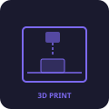

A timeline of the work I've built — from personal experiments to production apps.
A classic Snake game built in Java with Swing. Features multiple map sizes loaded from text files, adjustable speed, and game modes including Block Frenzy and Peaceful mode.
Java • Swing • File I/O • MultithreadingA procedural 2D terrain generator using Perlin noise to create scrolling, animated landscapes with snow-capped peaks, rocky cliffs, grass fields, and layered dirt.
Java • Swing • Perlin Noise • Procedural GenerationMy Etsy storefront at lsprintforge.etsy.com — a curated shop featuring handmade and custom products. Browse the store to see what's available.
Visit TikTok →
August 2024An Etsy storefront where I designed and sold custom 3D-printed products. From concept to CAD modeling to printing, each item was prototyped and produced in-house.
3D Printing • CAD • Product Design • E-Commerce Visit Shop →A collaborative computer science project that maps out safe and dangerous neighborhoods. Pathwise visualizes crime data and safety ratings across areas to help users find the safest routes and make informed decisions about where they travel.
Computer Science • Data Visualization • Mapping • Team ProjectAn ongoing venture bringing together everything I've learned — from product design and 3D printing to software development and marketing. Building something from the ground up.
Entrepreneurship • Strategy • Product Development